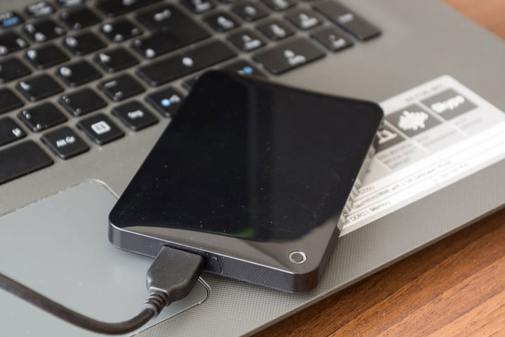
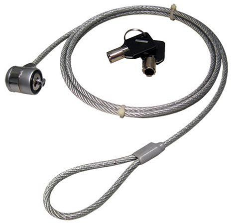
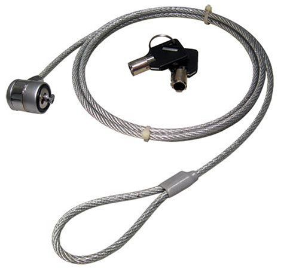

Preventing Laptop Theft

Losing your laptop can be devastating and more so when you have important files and documents on its hard drive
that you are yet to back up. Personally I have lost two laptops to thieves over the years, and know of friends
who have too, under circumstances that the use of something as simple as a
laptop lock could have averted.
A laptop’s portability makes it convenient and an easy target for thieves. Left unguarded, your laptop’s data and even the physical device may not be fully protected in a hotel room, classroom, cyber café, office, and sometimes even your bedroom! It only takes about 20 seconds or less for a thief to grab an unguarded laptop and melt away.
According to the FBI, a laptop is stolen every 53 seconds and approximately 97 percent are never recovered. It is estimated that one out of every ten laptop will be stolen within the first twelve months of purchase. Do not be part of statistics; follow these practical tips to safeguard your laptop and/or its content.
1. Back Up Your Data A decent laptop today cost approximatelyN150,000 and to lose such will definitely leave a knot in the pit of
one's stomach, but losing a N150,000 laptop with all your important files on it is ten times worse.
 For
this reason you should invest in a portable external hard drive. Personally I use a combination of Seagate 1TB and WD
500GB but you can check with your local store for available options that fit your budget. You can also order one online
from Jumia HERE and have it delivered to your doorstep. Note that you don’t
have to back up your computer every few seconds, just ensure you do it whenever you can remember but at least once a day.
And whenever possible, ensure to keep sensitive documents off portable machines and drives entirely.
2. Find The Right Laptop Security/Tracking Software I have never used one but there are dozens of laptop security software that, using several different elements including IP address locations and even the ability to turn on the laptop’s webcam remotely, can help you recover a stolen laptop. One of such software is the LoJack for laptops (originally known as CompuTrace). Also, the right antivirus software, like McAfee and Norton, can be particularly helpful when you are trying to keep your laptop safe from anyone hoping to steal your information through an internet connection. And there are folder lock software too that can stall the average thief trying to physically steal your information when you are not looking.
3. Invest In A Laptop Security Lock If you do need to leave your laptop unguarded for any length of time in a public place, a laptop lock provides an extra layer of security and peace of mind. Though sometimes largely ineffective to a motivated thief, laptop locks can serve as visual deterrents and are worth inducing a would-be thief’s second thoughts.  Unfortunately, most laptop users and computer shop owners do not know about this accessory. I recently discovered this when I wanted to buy one in Abuja, the only shop I found it insisted on selling at N4,500. Thankfully, I found it on Jumia at half that price. You can buy it HERE. Almost every laptop on the market today has a small slot somewhere along its right or left edge depending on the manufacturer and laptop model. This slot works with the laptop lock just as bicycle chains do viz-a-viz you find a solid immovable object, wrap the lock round it and then key it to your laptop. Physically locking your laptop to an immovable object is not really the coolest thing to do, but it works. And in case you don’t know how it works then watch these youtube videos: video 1, video 2. And remember, you can get the lock online HERE.
Summary Whether you use your laptop for business or pleasure, a few precautions taken early can save you from the loss of sensitive data – or even your precious laptop itself. Stay safe!
First published Tuesday, November 6th 2018
A laptop’s portability makes it convenient and an easy target for thieves. Left unguarded, your laptop’s data and even the physical device may not be fully protected in a hotel room, classroom, cyber café, office, and sometimes even your bedroom! It only takes about 20 seconds or less for a thief to grab an unguarded laptop and melt away.
According to the FBI, a laptop is stolen every 53 seconds and approximately 97 percent are never recovered. It is estimated that one out of every ten laptop will be stolen within the first twelve months of purchase. Do not be part of statistics; follow these practical tips to safeguard your laptop and/or its content.
1. Back Up Your Data A decent laptop today cost approximately
2. Find The Right Laptop Security/Tracking Software I have never used one but there are dozens of laptop security software that, using several different elements including IP address locations and even the ability to turn on the laptop’s webcam remotely, can help you recover a stolen laptop. One of such software is the LoJack for laptops (originally known as CompuTrace). Also, the right antivirus software, like McAfee and Norton, can be particularly helpful when you are trying to keep your laptop safe from anyone hoping to steal your information through an internet connection. And there are folder lock software too that can stall the average thief trying to physically steal your information when you are not looking.
3. Invest In A Laptop Security Lock If you do need to leave your laptop unguarded for any length of time in a public place, a laptop lock provides an extra layer of security and peace of mind. Though sometimes largely ineffective to a motivated thief, laptop locks can serve as visual deterrents and are worth inducing a would-be thief’s second thoughts.  Unfortunately, most laptop users and computer shop owners do not know about this accessory. I recently discovered this when I wanted to buy one in Abuja, the only shop I found it insisted on selling at N4,500. Thankfully, I found it on Jumia at half that price. You can buy it HERE. Almost every laptop on the market today has a small slot somewhere along its right or left edge depending on the manufacturer and laptop model. This slot works with the laptop lock just as bicycle chains do viz-a-viz you find a solid immovable object, wrap the lock round it and then key it to your laptop. Physically locking your laptop to an immovable object is not really the coolest thing to do, but it works. And in case you don’t know how it works then watch these youtube videos: video 1, video 2. And remember, you can get the lock online HERE.
Summary Whether you use your laptop for business or pleasure, a few precautions taken early can save you from the loss of sensitive data – or even your precious laptop itself. Stay safe!
First published Tuesday, November 6th 2018
Related posts: ...